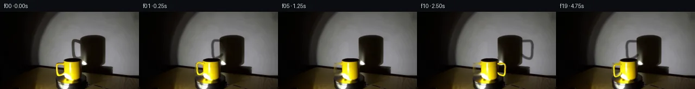

![首帧]()

Round 00
2026-11-05T03:52:43.200726+00:00像素候选变化代码 +259/−0inspection 更新
pixels 7f9cb7707d7c7865 · code 2b23767dde354d66
查看本轮 generate.py 真实 diff
--- previous/generate.py
+++ current/generate.py
@@ -0,0 +1,259 @@
+"""Photograph-preserving mug rotation using local analytic pixel operations."""
+from pathlib import Path
+import math
+import numpy as np
+from PIL import Image, ImageDraw
+from scipy.ndimage import gaussian_filter, map_coordinates, binary_dilation
+from scipy.interpolate import CubicSpline
+from scipy.sparse import coo_matrix
+from scipy.sparse.linalg import spsolve
+from artifact_io import save
+
+ROOT = Path(__file__).resolve().parent
+S = 4
+W, H = 256, 144
+CX, BY = 133.6, 124.5
+EL = math.radians(15)
+CE, SE = math.cos(EL), math.sin(EL)
+R, HEIGHT, TUBE = 16.0, 35.8, 1.58
+SOURCE = np.asarray(Image.open(ROOT / 'first_frame.png').convert('RGB'))
+PHOTO = np.asarray(Image.fromarray(SOURCE).resize((W*S, H*S), Image.Resampling.BICUBIC), dtype=float)
+YY, XX = np.mgrid[:H*S, :W*S].astype(float)
+XX = (XX+.5)/S-.5
+YY = (YY+.5)/S-.5
+
+
+def polygon_mask(points):
+ im = Image.new('L', (W*S,H*S))
+ ImageDraw.Draw(im).polygon([(int((x+.5)*S),int((y+.5)*S)) for x,y in points], fill=255)
+ return np.asarray(im,dtype=float)/255
+
+
+BODY = polygon_mask([(117.4,90.1),(119.7,87.9),(126,86.4),(137,86.1),
+ (145.9,87.1),(149.8,89.4),(150.2,94),(150.2,117.3),
+ (148.8,122.4),(143.9,125.7),(136.1,128.0),(128.4,127.8),
+ (122.8,124.9),(118.1,120.0),(117.5,111.0)])
+
+# Measured centerline of the original handle, expressed in its radial/vertical plane.
+PATH_XY = np.array([(118.1,96.4),(111.5,96.1),(107.0,96.8),
+ (105.5,99.5),(105.5,108.0),(105.9,114.6),
+ (107.8,118.1),(111.6,117.9),(116.1,115.9),
+ (119.0,113.4)])
+qz = np.column_stack([CX-PATH_XY[:,0], (BY-PATH_XY[:,1])/CE])
+arc = np.r_[0,np.cumsum(np.linalg.norm(np.diff(qz,axis=0),axis=1))]
+PATH = CubicSpline(arc,qz,bc_type='natural')(np.linspace(0,arc[-1],450))
+
+
+def paint_spheres(angle, shadow=False, texture=True):
+ """Rasterize the union of densely sampled analytic tube spheres, with normals."""
+ out = np.zeros((H*S,W*S,3),float)
+ depth = np.full((H*S,W*S),-1e6)
+ alpha = np.zeros((H*S,W*S),float)
+ ct, st = math.cos(angle), math.sin(angle)
+ radial = np.array([-ct,st,0.])
+ side = np.array([-st,-ct,0.])
+ light = np.array([-.38,-.90,.20]); light /= np.linalg.norm(light)
+ view = np.array([0.,-CE,SE])
+ half = light+view; half /= np.linalg.norm(half)
+ for q,z in PATH:
+ world = q*radial + np.array([0.,0.,z])
+ if shadow:
+ px = 171.25 + 1.44*(world[0]+.20*world[1])
+ py = 96.0 - 1.44*world[2] - .10*world[1]
+ rr = TUBE*1.44
+ else:
+ px = CX+world[0]
+ py = BY-world[2]*CE-world[1]*SE
+ rr = TUBE
+ x0=max(0,int((px-rr+0.5)*S)-1);x1=min(W*S,int((px+rr+0.5)*S)+2)
+ y0=max(0,int((py-rr+0.5)*S)-1);y1=min(H*S,int((py+rr+0.5)*S)+2)
+ if x1<=x0 or y1<=y0: continue
+ dx=(XX[y0:y1,x0:x1]-px)/rr
+ dy=(YY[y0:y1,x0:x1]-py)/rr
+ disk=1-dx*dx-dy*dy
+ valid=disk>=0
+ nz=np.sqrt(np.maximum(0,disk))
+ if shadow:
+ alpha[y0:y1,x0:x1][valid] = 1
+ continue
+ d=-world[1]*CE+world[2]*SE+rr*nz
+ target=depth[y0:y1,x0:x1]
+ update=valid & (d>target)
+ if not update.any(): continue
+ normals=np.stack([dx,-dy*SE-nz*CE,-dy*CE+nz*SE],axis=-1)
+ lam=np.maximum(0,normals@light)
+ spec=np.maximum(0,normals@half)**70
+ # Warm yellow glazed ceramic, with a localized source reflection.
+ rgb=np.stack([124+130*lam,99+148*lam,2+7*lam],axis=-1)
… diff truncated; 172 more lines …